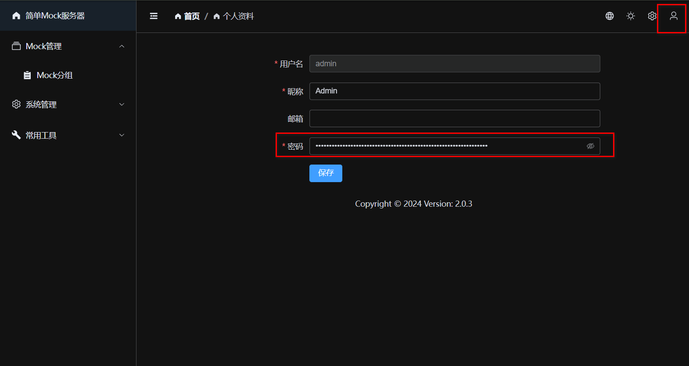
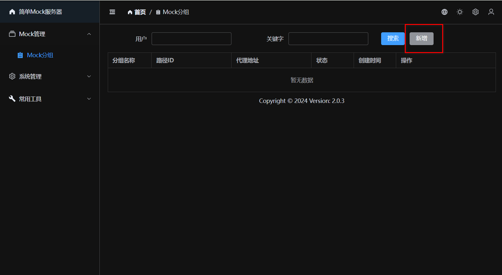
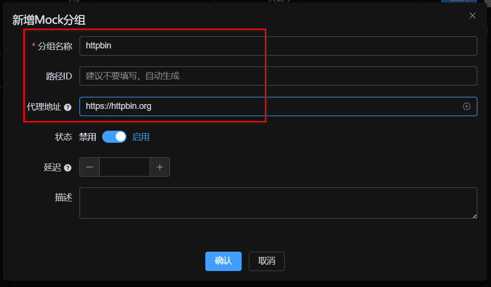
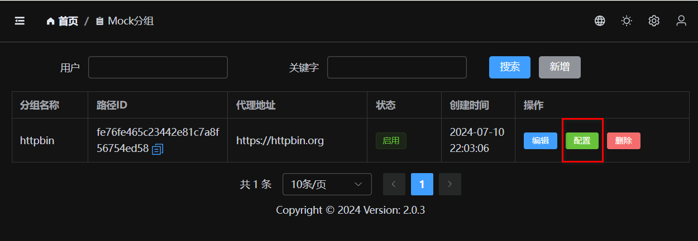
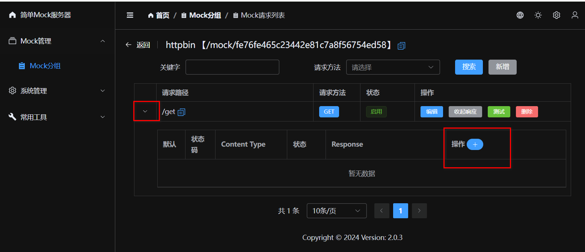
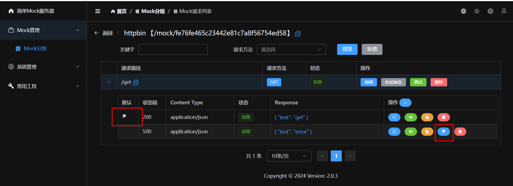
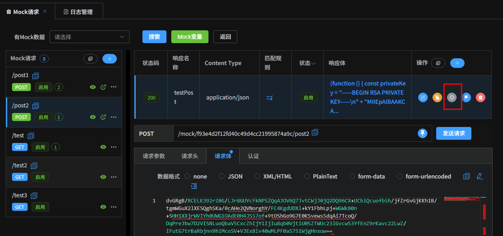

使用指南
Simple Boot Mock Server 是一个功能强大的 Mock 服务，支持基于 JavaScript (GraalJS) 的脚本引擎，允许您通过编写脚本来动态生成响应数据，实现高度灵活的 Mock 逻辑。
安装运行
1. 下载运行
下载最新版发行包 (Zip)：GitHub Releases
- 下载并解压 zip 文件。
- 运行
bin/start.sh(Linux/macOS) 或bin/start.bat(Windows)。
2. Docker 部署
使用 Docker 容器化部署是最简单快捷的方式：
docker run -d -p 9086:9086 fugary/simple-boot-mock-server:latestDocker Hub 地址: fugary/simple-boot-mock-server
Docker 配置参数
支持以下环境变量配置 (-e)：
| 变量名 | 默认值 | 说明 |
|---|---|---|
JAVA_OPTS | -Xmx512M | JVM 启动参数 |
MOCK_DB_TYPE | h2 | 数据库类型，支持 h2 或 mysql |
MOCK_DB_DATA_DIR | /data | H2 数据库文件存放路径 (建议挂载) |
MOCK_DB_H2_CONSOLE | false | 是否开启 H2 控制台 |
MOCK_DB_MYSQL_SERVER | localhost | MySQL 服务器地址 (仅 mysql 模式) |
MOCK_DB_MYSQL_PORT | 3306 | MySQL 端口 (仅 mysql 模式) |
MOCK_DB_MYSQL_DBNAME | mock-db | MySQL 数据库名称 (仅 mysql 模式) |
MOCK_DB_USERNAME | root | 数据库用户名 |
MOCK_DB_PASSWORD | 12345678 | 数据库密码 |
MOCK_DB_POOL_SIZE | 5 | 数据库连接池大小 |
示例：使用 MySQL
docker run -d -p 9086:9086 \
-e MOCK_DB_TYPE=mysql \
-e MOCK_DB_MYSQL_SERVER=192.168.1.100 \
-e MOCK_DB_USERNAME=root \
-e MOCK_DB_PASSWORD=secret \
fugary/simple-boot-mock-server:latest基础入门
登录使用
默认启动后访问：http://localhost:9086
系统预置了两个账号：
| 角色 | 用户名 | 密码 | 说明 |
|---|---|---|---|
| 管理员 | admin | 12345678 | 拥有所有权限 |
| 普通用户 | mock | mock | 仅能管理自己的项目 |
修改密码
登录后请第一时间修改密码。点击右上角头像进入【个人资料】，清空旧密码并设置新密码即可。
Mock 分组
Mock 分组用于组织和管理接口。每个分组对应一组 API 接口。
新增分组
点击【新增】，填写【分组名称】。可以直接设置【代理地址】，当 Mock 规则未匹配时，请求会自动转发到该地址。
Mock 请求
一个 Mock 分组下可以包含多个 Mock 请求。请求由 路径、方法 和 匹配规则 唯一确定。
新建请求
填写请求路径（如 /api/user/info）和请求方法。
测试请求
保存后点击【测试】按钮可直接测试 API。
- 如果未配置响应且未配置代理：返回 404。
- 如果配置了代理：转发请求到代理地址。
- 如果配置了响应：返回配置的 Mock 数据。
Mock 响应
每个请求可以配置多个响应数据（例如：成功、失败、异常），便于覆盖不同测试场景。
新建响应数据
支持配置 HTTP 状态码、响应头、延迟时间等。响应体支持 JSON、XML 等格式。
默认响应与切换
当存在多条响应数据时，可以点击【设为默认】来指定当前生效的响应。这对于快速切换 "成功" / "失败" 场景非常有用。
历史版本
每次修改响应数据都会自动记录历史版本，支持版本对比和回滚。
请求对象 (Request)
| 属性 | 说明 |
|---|---|
request.body | Body 内容对象 |
request.bodyStr | Body 原始内容字符串 |
request.headers | 请求头 Map |
request.parameters | Query 参数 |
request.pathParameters | 路径参数 |
响应对象 (Response)
| 属性 | 说明 |
|---|---|
response.statusCode | 状态码 (默认 200) |
response.headers | 响应头 Map |
response.body | 响应体对象 |
response.bodyStr | 响应体字符串 |
JS & Mock.js 支持
系统内置 JavaScript 引擎 (基于 JDK ScriptEngine)，支持 ES6 语法 (箭头函数等)。
Mock.js 模板
支持 Mock.js 语法生成随机数据。
Mock.mock({
"code": "success",
"data|10": [{
"id": "@integer(1, 100)",
"city": "@city",
"image": "@image('200x100')"
}]
})内置函数
除了 Mock.js，系统还预置了大量工具函数，用于加密、解码和日期处理。
| 函数签名 | 说明 |
|---|---|
decodeHex(hex) | Hex 解码为字符串 |
encodeHex(data) | 字符串编码为 Hex |
md5Hex(data) | MD5 加密 (Hex 输出) |
md5Base64(data) | MD5 加密 (Base64 输出) |
sha1Hex(data) / sha1Base64(data) | SHA1 加密 |
sha256Hex(data) / sha256Base64(data) | SHA256 加密 |
btoa(data) / atob(data) | Base64 编码 / 解码 |
encryptAES(data, key) | AES 加密 (Base64) |
decryptAES(data, key) | AES 解密 |
encryptRSA(data, key) / decryptRSA(data, key) | RSA 加密 / 解密 |
dayjs(date) | 日期处理 (Day.js) |
变量支持
在响应数据中，可以使用 request 对象获取请求参数，实现动态响应。
request.body: 请求体对象request.params: 所有参数集合 (Path + Query)request.headers: 请求头
Mock.mock({
"input_id": request.params.id,
"input_name": request.body.name,
"timestamp": Date.now()
})XML 支持
XML 响应同样支持 JS 模板语法和变量替换。
<user>
<id>{{request.params.id}}</id>
<name>{{Mock.mock('@cname')}}</name>
</user>匹配规则
当同一个 URL 需要根据不同参数返回不同结果时，使用匹配规则。规则为 JS 表达式，返回 true 即匹配成功。
// 示例: 当参数 type 为 'vip' 且 header 中有 token 时匹配
request.params.type === 'vip' && request.headers.token